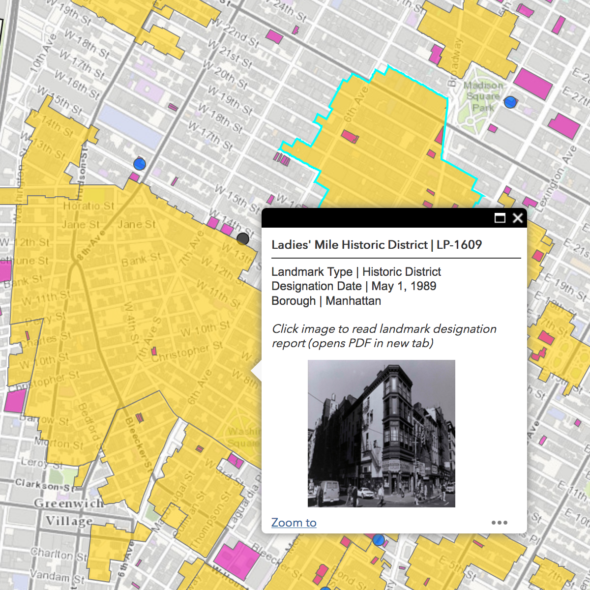
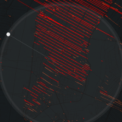

Visualization Archive
Yahoo! Finance: The Best and Worst U.S. States for Taxpayers
A look at tax rates in time for tax day, by Adriana Belmonte
A look at tax rates in time for tax day, by Adriana Belmonte
Jamie Gallagher: 300 Years of Element Discovery in 99 Seconds
A visualization of how the Periodic Table of Elements has changed over the course of 300 years.
A visualization of how the Periodic Table of Elements has changed over the course of 300 years.
Ryoji Ikeda: A [continuum] and code-verse
A two-part art installation visualizing big data, reflecting on the influence of digital media on our daily lives, by sound artist Ryoji Ikeda.
A two-part art installation visualizing big data, reflecting on the influence of digital media on our daily lives, by sound artist Ryoji Ikeda.
Opportunity Inisights: The Opportunity Atlas
A visualization of local social mobility data across the U.S., co-created by researchers at the Census Bureau and Opportunity Insights (a research and policy group based at Harvard University).
A visualization of local social mobility data across the U.S., co-created by researchers at the Census Bureau and Opportunity Insights (a research and policy group based at Harvard University).
Bloomberg: Here's How America Uses its Land
A look at U.S. land use by Dave Merrill and Lauren Leatherby
A look at U.S. land use by Dave Merrill and Lauren Leatherby
Slate: The Ultimate Data-Dog
Visualizing the Maximal Type of Dog Breed, by David McCandless
Visualizing the Maximal Type of Dog Breed, by David McCandless
Visualizing the Olympics
A look at Top Maps and Data Visualizations from Pyeongchang by Steve Isaac
A look at Top Maps and Data Visualizations from Pyeongchang by Steve Isaac
Flights of the World
Mapping the OpenFlights Database in Tableau, by Sarah Battersby and Florian Ramseger
Mapping the OpenFlights Database in Tableau, by Sarah Battersby and Florian Ramseger
Gendered Language in Teacher Reviews
An Exploratory Visualizations of Gendered Language in Teaching Reviews by Ben Schmidt
An Exploratory Visualizations of Gendered Language in Teaching Reviews by Ben Schmidt
Language Migration
The Eigenvector of "Why We Moved from Language X to Language Y" by Erik Bernhardsson
The Eigenvector of "Why We Moved from Language X to Language Y" by Erik Bernhardsson
FiveThirtyEight: Hurricane Harvey's Impact
A Comparison of Storm Impact by Rachael Dottle, Ritchie King, and Ella Koeze
A Comparison of Storm Impact by Rachael Dottle, Ritchie King, and Ella Koeze
City Lab: Transit Maps that Aren't Transit Maps
A Listing of Creative "Transit" Maps by Eric Jaffe
A Listing of Creative "Transit" Maps by Eric Jaffe
UCD Urban Modelling Group: High Density Laser Scanning
LiDAR Study of Central Dublin by Debra Laefer
LiDAR Study of Central Dublin by Debra Laefer
Vox: 100 Years of Tax Brackets
A look at the federal tax rate, by Alvin Chang
A look at the federal tax rate, by Alvin Chang
Vanshnookenraggen: A Complete and Geographically Accurate NYC Subway Track Map
The New York Subway as it Truly Exists, by Andrew Lynch
The New York Subway as it Truly Exists, by Andrew Lynch
Emoji Weather Map
An Emoji-Based Map of Current Weather, by Dark Sky
An Emoji-Based Map of Current Weather, by Dark Sky
Paleobiology Database Navigator
An API-Based Paleobiology Navigator by the UW–Madison
An API-Based Paleobiology Navigator by the UW–Madison
Brown University: Seeing Theory
Making Statistics More Accessible by Daniel Kunin
Making Statistics More Accessible by Daniel Kunin
NJ.com: How Much Snow is Forecast?
A Interactive Map Looking at Snowfall Predictions, by Stephen Stirling
A Interactive Map Looking at Snowfall Predictions, by Stephen Stirling
Flowing Data: One Dataset, Visualized 25 Ways
Letting Data Ramble, by Nathan Yau
Letting Data Ramble, by Nathan Yau
Visual Cinnamon: Using Data Storytelling with a Chord Diagram
An Example of How to Explain a Chord Diagram by Nadieh Bremer
An Example of How to Explain a Chord Diagram by Nadieh Bremer
Wired: U.S. Mega-Regions
A Map of U.S. Mega-Regions Based on Commuter Data by Alasdair Dae and Garrett Dash Nelson
A Map of U.S. Mega-Regions Based on Commuter Data by Alasdair Dae and Garrett Dash Nelson
C82: Colors of the Rails
A unified visualization of the world's metroline colors by Nicholas Rougeux
A unified visualization of the world's metroline colors by Nicholas Rougeux
Tracking the 2017 Solar Eclipse
Overview Maps of the 2017 Solar Eclipse by Michael Zeiler
Overview Maps of the 2017 Solar Eclipse by Michael Zeiler

Discover NYC Landmarks
Interactive Map of New York City by the Landmarks Preservation Commission
Interactive Map of New York City by the Landmarks Preservation Commission
Vacant New York
Mapping Manhattan's Shuttered Storefronts
Mapping Manhattan's Shuttered Storefronts
Windytv
A Global Map of Winds by Ivo
A Global Map of Winds by Ivo
Cartography Comparison: Google Maps and Apple Maps
Investigating the Differences between Google Map and Apple Maps by Justin O’Beirne
Investigating the Differences between Google Map and Apple Maps by Justin O’Beirne
Cabs in New York City
A Visualization of NYC Taxi Travel by Adrien Charles
A Visualization of NYC Taxi Travel by Adrien Charles
FlowingData: Divorce Rates for Different Groups
A Look at Divorce and Remarriage Rates by Nathan Yau
A Look at Divorce and Remarriage Rates by Nathan Yau
Wired: MindRider Bike Map
Measuring Brainwaves to Make a New Kind of Bike Map for NYC by Alex Davies
Measuring Brainwaves to Make a New Kind of Bike Map for NYC by Alex Davies
XKCD: Ocean and Lake Depths Infographic
Relative Ocean and Lake Depths by XKCD Webcomics
Relative Ocean and Lake Depths by XKCD Webcomics

CartoDB: Manhattanhenge throughout the Year
Tracking the Sun's Alignment with Manhattan Buildings by Andrew Hill
Tracking the Sun's Alignment with Manhattan Buildings by Andrew Hill
MoverDB.com: Continental Outlines
Visualizing Continents Using Shipping Routes by mattsdfgh
Visualizing Continents Using Shipping Routes by mattsdfgh
Neural Network Playground
Demonstrating a Neural Network, by Daniel Smilkov and Shan Carter
Demonstrating a Neural Network, by Daniel Smilkov and Shan Carter

Filming Revolution: A Meta-Documentary about Filmmaking in Egypt since the Revolution
An interactive documentary database of interviews of 30 filmmakers, archivists, activists, and artists by Alisa Lebow and Kakare Interactive
An interactive documentary database of interviews of 30 filmmakers, archivists, activists, and artists by Alisa Lebow and Kakare Interactive
Yale University Library's Robots Reading Vogue
Diving into the Data Available in a Full-Text Corpus of Vogue Magazine by Lindsay King and Peter Leonard
Diving into the Data Available in a Full-Text Corpus of Vogue Magazine by Lindsay King and Peter Leonard
WSJ: Battling Infectious Diseases in the 20th Century
The impact of vaccines, by Tynan DeBold and Dov Friedman
The impact of vaccines, by Tynan DeBold and Dov Friedman
Rumsey Historical Map Collection: Washington DC Today and 1851
An ESRI Storymap Comparing Past and Present Washington, DC
An ESRI Storymap Comparing Past and Present Washington, DC
Bloomberg: Who Marries Whom
A Chart That Shows Who Marries CEOs, Doctors, Chefs, and Janitors, by Adam Pearce and Dorothy Gambrell
A Chart That Shows Who Marries CEOs, Doctors, Chefs, and Janitors, by Adam Pearce and Dorothy Gambrell